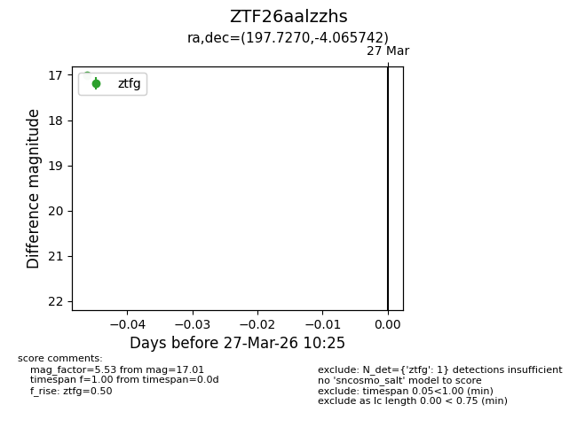
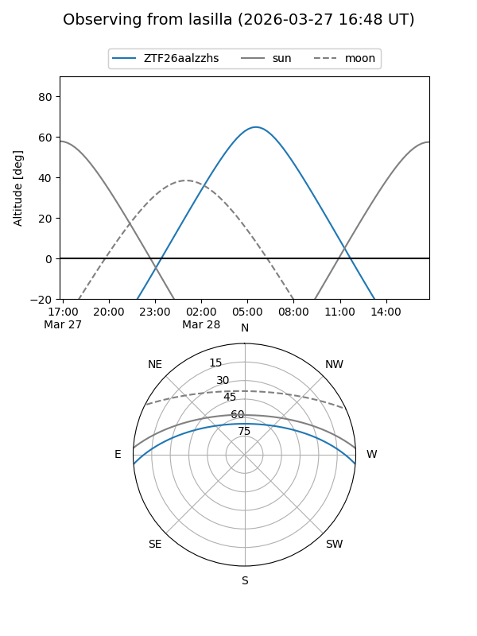
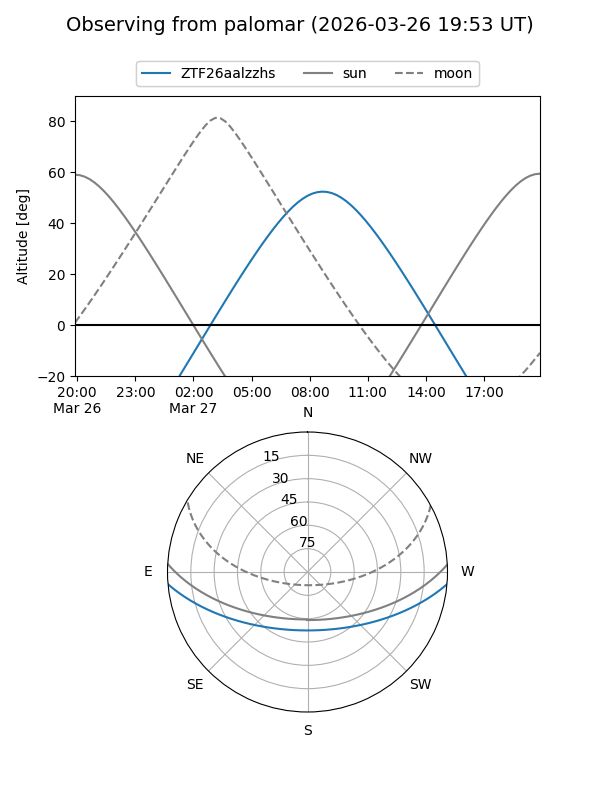

ZTF26aalzzhs
Target ZTF26aalzzhs at 2026-03-27 10:28
Aliases and brokers:
FINK: link
Lasair: link
ALeRCE: link
alt names
ZTF26aalzzhs (ztf,fink_ztf)
Coordinates:
equatorial (ra, dec) = 197.7270,-4.06574
equatorial (HMS+DMS) = 13:10:54.49,-04:03:56.67
galactic (l, b) = (312.2419,+58.45362)
Flags:
Photometry:
last ztfg=17.01
1 ztfg detections
Lightcurve

Visibility


Additional plots